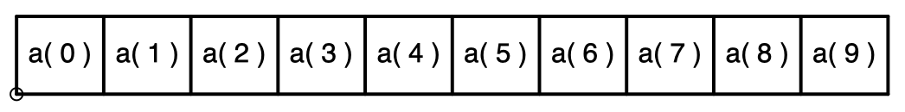
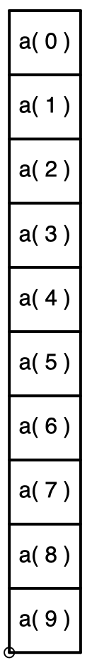
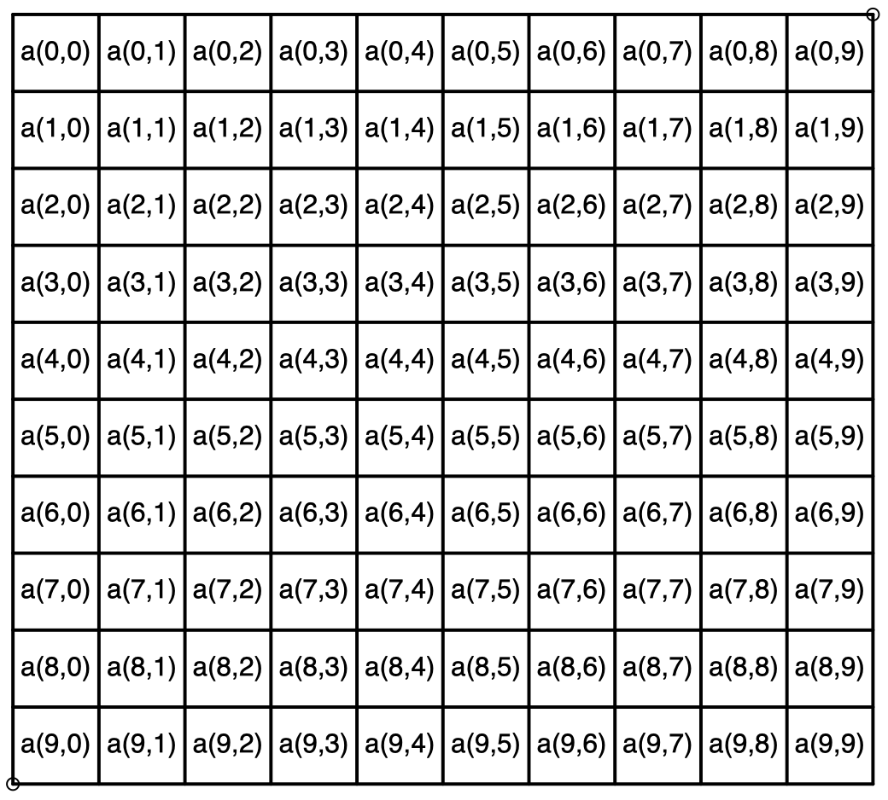
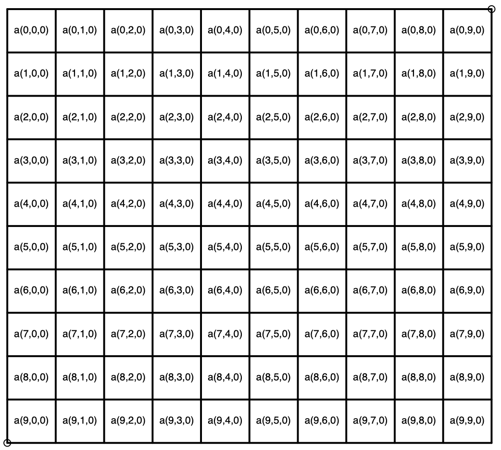
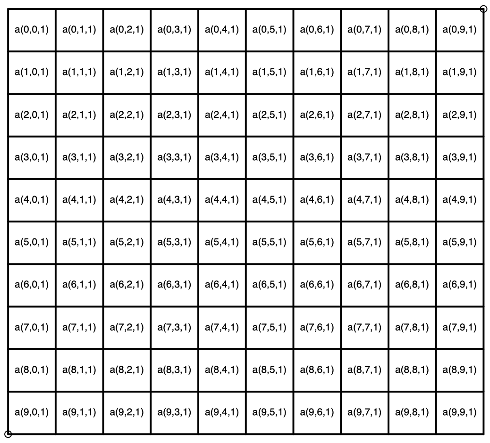
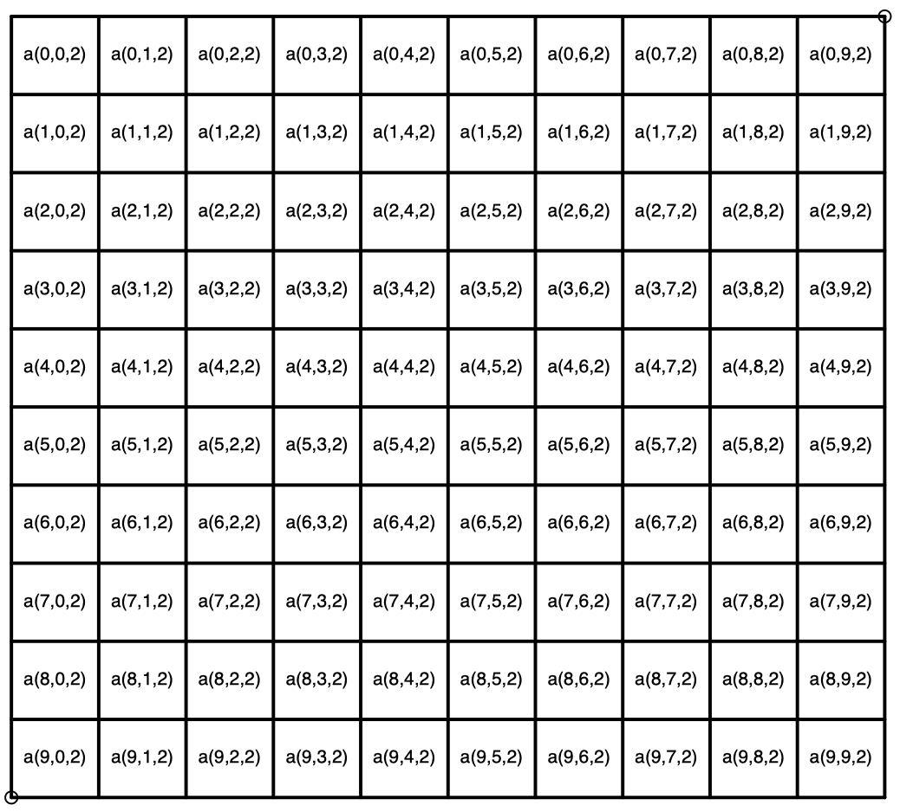

Estructuras de datos en el módulo numpy¶
En el módulo numpy se tienen estructuras de datos de la siguiente forma:
Vector fila

Vector columna

Matriz

Volumen Un volumen es representado por un prisma rectangular compuesto de tres dimensiones: largo, ancho y alto. Esta representado por matrices apiladas del mismo tamaño.


